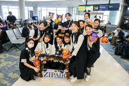

AIRLINE web -月刊エアライン×航空旅行-
https://airline.ikaros.jp
飛行機の運航を支える最前線、魅力あふれる空の旅のサービス、飛ぶためのテクノロジーやエアライン・空港の最新ビジネス動向、飛来機の撮影＆投稿など趣味として楽しむ航空の世界まで幅広く情報をお届けします。
フィード

圏央道 大栄JCT～多古IC開通。熊谷知事「成田空港周辺に産業の立地を」
AIRLINE web -月刊エアライン×航空旅行-
圏央道の大栄JCT～多古IC間が開通。 国土交通省 関東地方整備局とNEXCO東日本（東日本高速道路）は11月7日15時、首都圏中央連絡自動車道（圏央道）の大栄JCT（千葉県成田市吉岡）から多古IC（千葉県香取郡多古町 […]The post 圏央道 大栄JCT～多古IC開通。熊谷知事「成田空港周辺に産業の立地を」 first appeared on AIRLINE web -月刊エアライン×航空旅行-.
6時間前

JAL、737-800「トゥンクトゥンクJET」就航！ コシノジュンコが格納庫でファッションショーを演出
AIRLINE web -月刊エアライン×航空旅行-
GREEN×EXPO 2027のロゴ、公式マスコットキャラクター「トゥンクトゥンク」などが描かれたJA344J。 JALは11月6日、羽田空港の格納庫で特別デザイン機「JAL トゥンクトゥンクJET」を公開した。翌7日 […]The post JAL、737-800「トゥンクトゥンクJET」就航！ コシノジュンコが格納庫でファッションショーを演出 first appeared on AIRLINE web -月刊エアライン×航空旅行-.
7時間前

羽田空港第1ターミナルで「くまのプーさんデザインパッケージスイーツ」を期間限定販売
AIRLINE web -月刊エアライン×航空旅行-
羽田空港第1ターミナルに、「くまのプーさん」のポップアップが登場。 日本空港ビルデングは、11月1日より羽田空港第1ターミナル2F出発ロビー保安検査C前にて、「POP UP MON・CREVE」の「くまのプーさんデザイ […]The post 羽田空港第1ターミナルで「くまのプーさんデザインパッケージスイーツ」を期間限定販売 first appeared on AIRLINE web -月刊エアライン×航空旅行-.
1日前

アラスカ航空、成田＝アンカレッジ線に直行便。2027年5月から毎日運航
AIRLINE web -月刊エアライン×航空旅行-
アラスカ航空は、2027年5月13日からアンカレッジのテッド・スティーブンス・アンカレッジ国際空港と成田国際空港を結ぶ初の直行便を就航すると発表した。アンカレッジ発は9月7日まで、成田発は5月14日から9月8日まで毎日 […]The post アラスカ航空、成田＝アンカレッジ線に直行便。2027年5月から毎日運航 first appeared on AIRLINE web -月刊エアライン×航空旅行-.
2日前

HondaJetで成田空港発着の「2027年 プライベートジェット初日の出フライト」
AIRLINE web -月刊エアライン×航空旅行-
「2027年 プライベートジェット初日の出フライト」。 成田国際空港（NAA）グループのグリーンポート・エージェンシーは、FPGAir（エフピージーエア）の協力のもと、成田空港発着の「2027年 プライベートジェット初 […]The post HondaJetで成田空港発着の「2027年 プライベートジェット初日の出フライト」 first appeared on AIRLINE web -月刊エアライン×航空旅行-.
2日前

神戸空港、11月29日に「空の日イベント2026」開催、そらやんと撮れるプリクラ初登場
AIRLINE web -月刊エアライン×航空旅行-
関西エアポート神戸は、11月29日に神戸空港で「空の日イベント2026」を開催すると発表した。航空や空港への理解と関心を深めることを目的に、航空会社によるブース出展やグッズ販売、お仕事体験、ワークショップなど、さまざま […]The post 神戸空港、11月29日に「空の日イベント2026」開催、そらやんと撮れるプリクラ初登場 first appeared on AIRLINE web -月刊エアライン×航空旅行-.
2日前

ジェットスター・ジャパン、A321LR新造機「JA29LR」を公開、11月6日就航へ
AIRLINE web -月刊エアライン×航空旅行-
ジェットスター・ジャパンが真っ白なエアバスA321LR新造機の機内外を公開。 10月29日に日本に到着した、ジェットスター・ジャパンのエアバスA321LRの4号機（登録記号：JA29LR）が11月6日に就航する。それに […]The post ジェットスター・ジャパン、A321LR新造機「JA29LR」を公開、11月6日就航へ first appeared on AIRLINE web -月刊エアライン×航空旅行-.
2日前

セントレア、フライトパークに乳幼児専用あそび場「ヒコーキの丘」がオープン
AIRLINE web -月刊エアライン×航空旅行-
新たな乳幼児専用あそび場「ヒコーキの丘」 中部国際空港セントレアでは、11月1日、遊んで＆学べる空のテーマパーク「フライト・オブ・ドリームズ」1階の「フライトパーク」において、乳幼児専用遊び場「ヒコーキの丘」がオープン […]The post セントレア、フライトパークに乳幼児専用あそび場「ヒコーキの丘」がオープン first appeared on AIRLINE web -月刊エアライン×航空旅行-.
3日前

成田国際空港フォトコンテスト2026、受賞作品が決定。応募1,061作品から17作品受賞
AIRLINE web -月刊エアライン×航空旅行-
「成田国際空港フォトコンテスト2026～Share your NARITA Airport～」 成田国際空港（NAA）は、東京カメラ部と連携し、「成田国際空港フォトコンテスト2026～Share your NARITA […]The post 成田国際空港フォトコンテスト2026、受賞作品が決定。応募1,061作品から17作品受賞 first appeared on AIRLINE web -月刊エアライン×航空旅行-.
3日前

JALと豊田自動織機、羽田空港で自動運転レベル4の走行ルート拡大へ
AIRLINE web -月刊エアライン×航空旅行-
JALと豊田自動織機は、羽田空港で自動運転レベル4に対応したトーイングトラクターの走行ルート拡大に向けた検証を開始する。自動運転レベル4は、特定の条件下でシステムがすべての運転操作を担う完全無人運転を指す。 JALは […]The post JALと豊田自動織機、羽田空港で自動運転レベル4の走行ルート拡大へ first appeared on AIRLINE web -月刊エアライン×航空旅行-.
3日前

JALとJ-AIR、2026年度冬の自社養成パイロット業務体験を合同開催
AIRLINE web -月刊エアライン×航空旅行-
JALとJ-AIRは、2027年1月6日から8日まで、「2026年度自社養成パイロット業務体験（冬）」を合同で開催する。対面またはオンライン形式で実施し、10月30日から11月29日まで応募を受け付ける。 今回の業務 […]The post JALとJ-AIR、2026年度冬の自社養成パイロット業務体験を合同開催 first appeared on AIRLINE web -月刊エアライン×航空旅行-.
3日前

ANA国際線就航40周年記念、AVIREXとのコラボ商品発売。MA-1ブルゾンとヘルメットバッグが登場
AIRLINE web -月刊エアライン×航空旅行-
MA-1ブルゾンとヘルメットバッグ 全日空商事は、ANA国際線就航40周年を記念し、米国のミリタリーウェアブランド「AVIREX（アヴィレックス）」とコラボレーションしたMA-1ブルゾンとヘルメットバッグを数量限定で発 […]The post ANA国際線就航40周年記念、AVIREXとのコラボ商品発売。MA-1ブルゾンとヘルメットバッグが登場 first appeared on AIRLINE web -月刊エアライン×航空旅行-.
3日前

成田・さくらの山「フライトショップ・チャーリイズ」がオープン10周年。飛行機を「見る・聞く・味わう」企画でお祝い
AIRLINE web -月刊エアライン×航空旅行-
成田・さくらの山の「フライトショップ・チャーリイズ」がオープン10周年。 成田空港RWY16Rエンドのさくらの山公園にある「空の駅 さくら館」で11月3日、「フライトショップ・チャーリイズ」のオープン10周年を記念する […]The post 成田・さくらの山「フライトショップ・チャーリイズ」がオープン10周年。飛行機を「見る・聞く・味わう」企画でお祝い first appeared on AIRLINE web -月刊エアライン×航空旅行-.
3日前

JAL「GREEN×EXPO」特別デザイン機のデカール貼付。“貼るだけ”ではない技術が詰まる
AIRLINE web -月刊エアライン×航空旅行-
JAL「GREEN×EXPO 2027」の特別デザイン機のデカール貼付作業がスタート。 JALが協賛する「GREEN×EXPO 2027」の特別デザイン機。10月19日に行なわれたデカールの領収検査の様子はすでにお伝え […]The post JAL「GREEN×EXPO」特別デザイン機のデカール貼付。“貼るだけ”ではない技術が詰まる first appeared on AIRLINE web -月刊エアライン×航空旅行-.
3日前

シンガポール航空、新機内エンタメ「クリスワールド」とスターリンク高速Wi-Fiを導入
AIRLINE web -月刊エアライン×航空旅行-
シンガポール航空は10月23日、次世代機内エンターテインメントシステム「クリスワールド」およびスターリンクの低軌道（LEO）衛星通信を活用した高速接続サービスを導入すると発表した。 2027年以降に運航を開始する改修 […]The post シンガポール航空、新機内エンタメ「クリスワールド」とスターリンク高速Wi-Fiを導入 first appeared on AIRLINE web -月刊エアライン×航空旅行-.
6日前

ZIPAIR、成田空港で恒例のHalloweenイベント。カウンターも機内もハロウィン仕様に
AIRLINE web -月刊エアライン×航空旅行-
ZIPAIRが恒例のハロウィンイベントを開催。 ZIPAIRは10月31日、成田空港 第1ターミナルの同社出発便の搭乗口で、ハロウィンイベントを開催した。 ZIPAIRでは、客室乗務と地上旅客業務を兼務する「Z_ON […]The post ZIPAIR、成田空港で恒例のHalloweenイベント。カウンターも機内もハロウィン仕様に first appeared on AIRLINE web -月刊エアライン×航空旅行-.
7日前
JAL、福岡空港でトーイングトラクターの「自動運転レベル4」運用を開始
AIRLINE web -月刊エアライン×航空旅行-
JALと福岡国際空港（FIAC）は、10月26日から福岡空港において、搬送用車両（トーイングトラクター）の自動運転レベル4（特定条件下での完全無人運転）による運用を開始した。JALにおけるレベル4導入は羽田・成田空港に […]The post JAL、福岡空港でトーイングトラクターの「自動運転レベル4」運用を開始 first appeared on AIRLINE web -月刊エアライン×航空旅行-.
8日前

エア タヒチ ヌイ、成田＝タヒチ線の通年運航を再開
AIRLINE web -月刊エアライン×航空旅行-
エア タヒチ ヌイは、2027年より成田＝タヒチ（パペーテ）線の通年運航を再開する。これにより、年間を通じて日本とタヒチを結ぶ直行便を利用できるようになる。 通年運航の再開には、アジア各国からタヒチへの渡航需要に加え […]The post エア タヒチ ヌイ、成田＝タヒチ線の通年運航を再開 first appeared on AIRLINE web -月刊エアライン×航空旅行-.
8日前
JAL、11〜12月の機内販売で、JAL制服着用ファミリアベアーやマリメッコとの初コラボアイテム登場
AIRLINE web -月刊エアライン×航空旅行-
JALは、国内線および国際線の搭乗客限定で利用できる機内販売において、11月1日よりラインナップを一新し、新商品の販売を開始する。パイロットや客室乗務員、整備士の制服を着た「ファミリア」のぬいぐるみや、「マリメッコ」と […]The post JAL、11〜12月の機内販売で、JAL制服着用ファミリアベアーやマリメッコとの初コラボアイテム登場 first appeared on AIRLINE web -月刊エアライン×航空旅行-.
8日前
AIRDO、パジャマ姿のベア・ドゥなど機内販売新商品
AIRLINE web -月刊エアライン×航空旅行-
マスコットベア・ドゥ（パジャマVer.）〈ホワイト〉。 AIRDOは、11月1日より、AIRDOが運航する全路線の機内で「マスコットベア・ドゥ（パジャマVer.）」、「『さっぱち』スティックハニー」を販売する。 マスコ […]The post AIRDO、パジャマ姿のベア・ドゥなど機内販売新商品 first appeared on AIRLINE web -月刊エアライン×航空旅行-.
8日前
AIRDO、「ゴールデンカムイ」コラボレーションを延長
AIRLINE web -月刊エアライン×航空旅行-
©野田サトル／集英社・ゴールデンカムイ製作委員会 AIRDOは、2026年1月から展開しているTVアニメ「ゴールデンカムイ」とのコラボレーション企画を、当初予定していた12月までから、2027年3月末まで延長 […]The post AIRDO、「ゴールデンカムイ」コラボレーションを延長 first appeared on AIRLINE web -月刊エアライン×航空旅行-.
8日前
ANAHD、AIRDO／ソラシドエアの共同持ち株会社の完全子会社化へ向け協議。ブランドは当面維持
AIRLINE web -月刊エアライン×航空旅行-
ANAホールディングス（ANAHD）は10月29日、AIRDOとソラシドエアの共同持株会社である株式会社リージョナルプラスウイングス（RPW）との間で、株式交換によるRPWの完全子会社化に向けた具体的な協議および検討を […]The post ANAHD、AIRDO／ソラシドエアの共同持ち株会社の完全子会社化へ向け協議。ブランドは当面維持 first appeared on AIRLINE web -月刊エアライン×航空旅行-.
9日前
ジェットスター4機目のA321LRは“真っ白”塗装。新灯火ユニット「MFRL」を国内初採用
AIRLINE web -月刊エアライン×航空旅行-
ジェットスター・ジャパンにとって4機目となるエアバスA321LR（JA29LR）が真っ白な塗装で到着。 ジェットスター・ジャパンが新たに導入するエアバスA321LRの4号機（登録記号：JA29LR）が10月29日、成田 […]The post ジェットスター4機目のA321LRは“真っ白”塗装。新灯火ユニット「MFRL」を国内初採用 first appeared on AIRLINE web -月刊エアライン×航空旅行-.
9日前
スプリング・ジャパンとGPA、「滑走路の日」キャンペーンで成田空港バスツアーを実施
AIRLINE web -月刊エアライン×航空旅行-
「スプリング・ジャパン『滑走路の日』×成田空港スペシャルバスツアー」。 スプリング・ジャパンとグリーンポート・エージェンシーは共同で、「スプリング・ジャパン『滑走路の日』×成田空港スペシャルバスツアー」を10月26日よ […]The post スプリング・ジャパンとGPA、「滑走路の日」キャンペーンで成田空港バスツアーを実施 first appeared on AIRLINE web -月刊エアライン×航空旅行-.
9日前
ソラシドエア、オリジナル芋焼酎「そらより。2027」を発売へ
AIRLINE web -月刊エアライン×航空旅行-
パッケージデザインは2027年に公開予定。 ソラシドエアは、薩摩酒造、地域商社推進機構、鹿児島県枕崎市との4者連携プロジェクトの第2弾として、オリジナル芋焼酎「そらより。2027」を2027年春頃に発売する。第1弾の好 […]The post ソラシドエア、オリジナル芋焼酎「そらより。2027」を発売へ first appeared on AIRLINE web -月刊エアライン×航空旅行-.
10日前
東京モノレール、駅社員・乗務員の制服を16年ぶりにリニューアル
AIRLINE web -月刊エアライン×航空旅行-
東京モノレールの駅社員および乗務員の新制服。 羽田空港と都心をつなぐ「東京パノラマライン」を運行する東京モノレールは、16年ぶりとなる接客制服のリニューアルを行ない、11月1日より着用を開始する。リニューアルするのは、 […]The post 東京モノレール、駅社員・乗務員の制服を16年ぶりにリニューアル first appeared on AIRLINE web -月刊エアライン×航空旅行-.
10日前
ブリヂストン、ボーイング737-8／737NG向け次世代タイヤ供給、着陸可能回数20％以上向上
AIRLINE web -月刊エアライン×航空旅行-
ブリヂストン、ボーイング737-8／737NG向け次世代タイヤ供給。 ブリヂストンは10月27日、独自の材料技術とフライトデータを用いたシミュレーション技術を組み合わせた最適設計により、摩耗性能を大幅に向上させたボーイ […]The post ブリヂストン、ボーイング737-8／737NG向け次世代タイヤ供給、着陸可能回数20％以上向上 first appeared on AIRLINE web -月刊エアライン×航空旅行-.
10日前
ANA整備士に「ステッカーください」と声がけを。那覇空港で「首里城正殿復元記念ステッカー」プレゼント。11月1日から
AIRLINE web -月刊エアライン×航空旅行-
整備士に声をかけてプレゼントしてもらえる「首里城正殿復元記念オリジナルステッカー」。 ANAグループの航空機整備会社であるANAラインメンテナンステクニクスの沖縄整備部 社員が、首里城正殿の復元を記念して企画・制作した […]The post ANA整備士に「ステッカーください」と声がけを。那覇空港で「首里城正殿復元記念ステッカー」プレゼント。11月1日から first appeared on AIRLINE web -月刊エアライン×航空旅行-.
10日前
東京・大手町タワーで「JALふるさとマルシェ」開催。資源循環や地域活性化に向けた東京建物との協働
AIRLINE web -月刊エアライン×航空旅行-
JALと東京建物が、東京・大手町タワー地下2階の森のプラザで「JALふるさとマルシェ」を開催。 JALと東京建物は、持続可能な社会の実現に向けた協業の第1弾として、10月28日と29日の2日間、東京・大手町タワー地下2 […]The post 東京・大手町タワーで「JALふるさとマルシェ」開催。資源循環や地域活性化に向けた東京建物との協働 first appeared on AIRLINE web -月刊エアライン×航空旅行-.
10日前
全国の精鋭12名が4分30秒で18席を仕上げる。ANA、機内清掃スキルコンテスト2026を開催
AIRLINE web -月刊エアライン×航空旅行-
ANAは10月26日、機内清掃技術の全国1位を決定する社内コンテスト「ANA Cabin Cleaning Skill Contest 2026」を、羽田空港のそばにある総合訓練施設「ANA Blue Base」で開催 […]The post 全国の精鋭12名が4分30秒で18席を仕上げる。ANA、機内清掃スキルコンテスト2026を開催 first appeared on AIRLINE web -月刊エアライン×航空旅行-.
10日前
福岡空港に「TABISIA」誕生。商業・ホテル・バスターミナルを備える複合施設を新設。2027年夏頃グランドオープン
AIRLINE web -月刊エアライン×航空旅行-
福岡国際 国内線ターミナルビル直結の複合施設「TABISIA」が2027年オープンへ。 福岡国際空港株式会社（FIAC）は10月27日、国内線ターミナル直結の複合施設の概要や施設名称などを発表した。 福岡空港の将来イ […]The post 福岡空港に「TABISIA」誕生。商業・ホテル・バスターミナルを備える複合施設を新設。2027年夏頃グランドオープン first appeared on AIRLINE web -月刊エアライン×航空旅行-.
11日前
デルタ航空、すべての太平洋路線・全客室で無料Wi-Fiの提供を開始
AIRLINE web -月刊エアライン×航空旅行-
デルタ航空は、日米路線を含むすべての太平洋路線において、T-Mobile提供による無料Wi-Fiサービスの提供を開始した。無料のマイレージプログラム「スカイマイル」会員であれば搭乗クラスを問わず常時利用可能。 機内W […]The post デルタ航空、すべての太平洋路線・全客室で無料Wi-Fiの提供を開始 first appeared on AIRLINE web -月刊エアライン×航空旅行-.
11日前